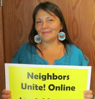

Inclusion
From E-Democracy.org
Inclusive Community Engagement Online - Project Home

The Inclusive Community Engagement Online initiative is a comprehensive three year initiative led by E-Democracy.org. With three years of initial funding from the Knight Foundation for $625,000, it has three main components:
- St. Paul Neighbors Forums - Inclusion, expansion, and engagement to reach 10,000 participants
- Lesson Sharing - Convening, research, and promoting online engagement widely
- Innovation and Technology - Next generation experiments
The BeNeighbors.org campaign is slated to evolve into a "Got Milk?" style directory of online neighborhood spaces including those well beyond the official E-Democracy forum network.
Contents[hide] |
Key Resources
- Press Release St. Paul - St. Paul BeNeighbors.org Campaign - 15 FEB 2012 - PDF
- Blog Announcement
- One Pagers
- Special Note to Knight communities
- Grant Agreement and Grant Narrative Excerpts - Detailed Document in PDF
- Contact E-Democracy - Urgent Press Queries to Steven Clift:+1-612-234-7072, To Volunteer in St. Paul, Contact Corrine Bruning, Outreach Coordinator via team@e-democracy.org
Sign-up
Follow Highlights
- Project Blog - Blog via e-mail (Our key in-depth "what's new" one-way channel)
- E-Newsletter
- @edemo on Twitter
- E-Democracy.org Facebook Page
Get Involved
- Projects Online Group - Volunteer Starting Point
- Project Information Request Form
- Join a Neighbors Forum - Our BeNeighbors.org Directory for St. Paul and Minneapolis (initially), see all E-Democracy hosted forums across 16 communities in three countries
- Locals Online - For Knowledge Sharing - Related communities of practice
- New Neighbors Forum Request Form
Print Materials
- BeNeighbors One Page Poster/Flyer - PDF - Please print and hang at your favorite coffee shop
- More Fliers, Sign-up Sheets, etc.
- E-Democracy Logo People-only - 1.2 MB JPG - All Sizes
{kind=link}
Resources
- Be Neighbors Twin Cities - Directory
- Neighbors Forum Presentation
- Why Digital Inclusion for Community Voices? - Article
- Inclusive Social Media 2010-2011 Project Archive - Pilot funded by the Ford Foundation
Media Coverage
- A "Facebook for the neighborhood" expands in Saint Paul - Mar 7, 2012 - Also carried on MinnPost.
- Grant to help online community forums reach minorities - TwinCities.com - Pioneer Press - Feb 16, 2012 (Headline changed to "Internet forum aims to spread democracy" which obscures the real story.)
- E-Democracy shoots for 10,000 in St. Paul - Feb 16, 2012
 This page was last modified on 21 March 2012,
at 05:40. This page has been accessed 3,584 times.
This page was last modified on 21 March 2012,
at 05:40. This page has been accessed 3,584 times.